Thermosyphon Flow Prediction
Predicting Flow Reversals in a Computational Fluid Dynamics Simulated Thermosyphon using Data Assimilation
created by andy reagan / @andyreagan
Data Assimilition
Tests on Lorenz 63
- 3D-Var
- Extended Kalman Filter
- Ensemble Kalman Filter
- Ensemble Transform Kalman Filter
Lorenz System
\[ \begin{align*}
\frac{dx}{dt} &= \sigma (y-x)\\
\frac{dy}{dt} &= \rho x - y -xz \\
\frac{dz}{dt} &= xy - \beta z\end{align*} \]
function [xprime] = lorenz63_model(~,x,params)
% the Lorenz '63 system, as a function
%
% INPUT
% t - time, scalar
% y - column vector solution
% params - cell array of parameters {b,s,r}
b = params{1}; s = params{2}; r = params{3};
xprime = [s*(x(2)-x(1));r*x(1)-x(2)-x(1)*x(3);x(1)*x(2)-b*x(3)];
end
3D-Var
- Theory last week!
- Cost function: \[ J(\mathbf{x}) = (\mathbf{x} - \mathbf{x}_b) ^T \mathbf{B} ^{-1} (\mathbf{x} - \mathbf{x}_b) + (\mathbf{y_o} + H(\mathbf{x}))^T\mathbf{R}^{-1| (\mathbf{y}_o - H(\mathbf{x})) \]
- Set \( \nabla_x J(\mathbf{x}_a) = 0 \): \[ \mathbf{x}_a = \mathbf{x}_b+(\mathbf{B}^{-1} + \mathbf{H}^T\mathbf{R}^{-1}\mathbf{H})^{-1}\mathbf{H}^T\mathbf{R}^{-1}(\mathbf{y}_o-\mathbf{H}(\mathbf{x}_b)) \]
- Get \[ \mathbf{V} = (\mathbf{B}^{-1}+\mathbf{H}^{T}\mathbf{R}^{-1}\mathbf{H})^{-1}\mathbf{H}^{T}\mathbf{R}^{-1} \] \[ \mathbf{d} = \mathbf{y}_0 - \mathbf{H} \mathbf{x}_b \] \[ \mathbf{x}_a = \mathbf{x}_b + \mathbf{V} \mathbf{d} \]
function [x_a] = threedvar(x_f,y_o,H,R,B,varargin)
% 3D-Var
%
% Solve the 3D-Var cost function
%
% INPUTS
% x_f: the previous analysis, column vector
% y_o: observations
% H: obs operator
% R: obs cov
% B: model cov
%
% OUTPUTS
% x_a -> the analysis
%
% written by Andy Reagan
% last edited 2014-10-02
% precompute intermediary matrix
V = (Binv+H'*inv(R)*H)\(H'*inv(R));
% innovation
d = y_o - H*x_f;
x_a = x_f + V*d;
EKF
- Implementation: \[ \begin{align} \mbx^a (t_i ) &= \mbx^f (t_i) + \mbK_i \mbd_i\\ \mbP^a (t_i) &= (\mathbf{I} - \mbK_i \mbH_i )\mbP^f (t_i) \end{align} \] \[ \mbd_i = \mby_i^o - \mbH[x^f (t_i) ] \]
- The Kalman gain matrix is computed to minimize the analysis error covariance \( P^a _i \) as \[ \mbK_i = \mbP^f (t_i) \mbH_i ^T [ \mbR_i + \mbH_i \mbP^f (t_i) \mbH^T ] ^{-1} \] where \( \mbR_i \) is the observation error covariance.
function [x_a,p_a] = EKF(x_f,y_o,H,R,p_f,varargin)
% EKF
%
% generalized EKF: compute a new error covariance and forecast
%
% INPUTS
% x_f: the previous analysis, column vector
% y_o: observations
% H: obs operator
%
% OUTPUTS
% x_a -> the analysis
%
% written by Andy Reagan
% 13-06-13
% now need to compute the new analysis
K = (p_f*H')/(R+H*p_f*H');
% innovation
d = y_o - H*x_f;
% analysis
x_a = x_f + K*d;
p_a = (eye(length(x_f)) - K*H)*p_f;
Integrating the TLM
- We can think of the ODE we're solving as: \[ \frac{d\mbx}{dt} = F(\mbx) .\]
- The RK4 scheme I use discretized this equation: \[ \mbx(t) = M[ \mbx(t_0) ] .\]
- Introducing a small perturbation \(\mby\), we can approximate our model \(M\) applied to \(\mbx(t_0) + \mby(t_0)\) with a Taylor series around \(\mbx(t_0)\): \[ \begin{align*} M[ \mbx(t_0) + \mby(t_0) ] &= M [ \mbx(t_0) ] + \frac{\partial M}{\partial \mbx} \mby(t_0) + O [ \mby(t_0) ^2 ]\\ &\approx \mbx(t) + \frac{\partial M}{\partial \mbx} \mby(t_0) .\end{align*} \]
Integrating the TLM
Integrating the TLM
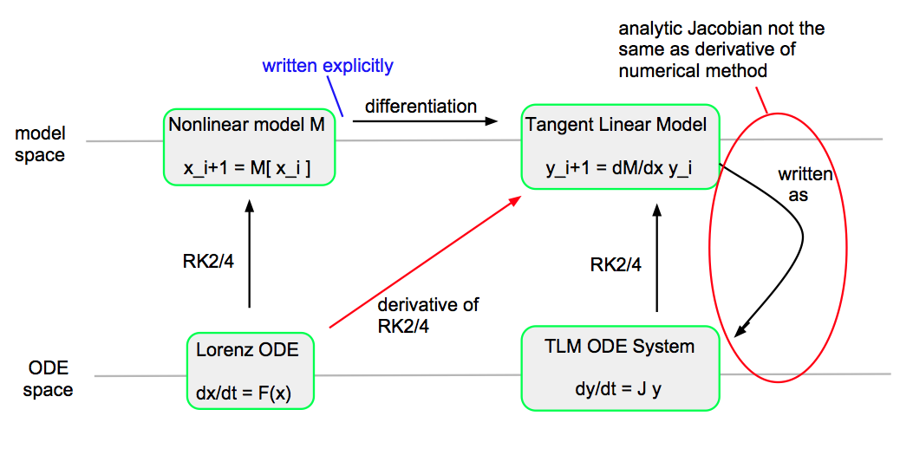
function [p_f] = lorenz63_TLM(method,t,window_len,x_a,tstep,p_a,params)
switch method
case 'rk2prime'
%%%%%%%%%%%%%%%%%
%% rk2 prime method
% integrate the foward model
[~,~,L] = rk2prime(@lorenz63_model,@lorenzJ,params,[t t+window_len],x_a,tstep);
% error covariance from model
p_f = L*p_a*L';
case 'kam'
%%%%%%%%%%%%%%%%%%%%%%
%% method from Kam
% compute the Jacobian of Lorenz 63
lorenzJac = @(y,params) [-params{2},params{2},0;-y(3)+params{3},-1,-y(1);y(2),y(1),-params{1}];
J = lorenzJac(x_a,params);
dim = length(x_a);
p_f = ones(dim);
for i=1:dim
[~,tmp] = rk2(@(~,y,params) J*y,params,[t t+window_len],p_a(:,i),tstep);
p_f(:,i) = tmp(end,:)';
end
case 'explicit'
%%%%%%%%%%%%%%%%%%%%
%% explicit RK2 derivative method
% compute the LTM from the RK2 discretization of model directly
[~,~,L] = lorenzRK2explicit([t t+window_len],x_a,tstep);
% error covariance from model
p_f = L*p_a*L';
end
end
function [tout, yout,L] = rk2prime(FunFcn,J,params, tspan, y0, ssize)
% RK2 Integrates a system of ordinary differential equations using
% the second order Runge-Kutta method. See also ODE45 and
% ODEDEMO.M.
% [t,y] = rk2('yprime', tspan, y0) integrates the system
% of ordinary differential equations described by the M-file
% yprime.m over the interval tspan=[t0,tfinal] and using initial
% conditions Y0.
% [t, y] = rk2(F, tspan, y0, ssize) uses step size ssize
%
% INPUT:
% F - String containing name of user-supplied problem description.
% Call: yprime = fun(t,y,params) where F = 'fun'.
% t - Time (scalar).
% y - Solution column-vector.
% yprime - Returned derivative column-vector; yprime(i) = dy(i)/dt.
% params - Parameters of the function, cell array
% tspan = [t0, tfinal], where t0 is the initial value of t, and tfinal is
% the final value of t.
% y0 - Initial value column-vector.
% ssize - The step size to be used. (Default: ssize = (tfinal - t0)/100).
%
% OUTPUT:
% t - Returned integration time points (column-vector).
% y - Returned solution, one solution column-vector per tout-value.
%
% The result can be displayed by: plot(t,y).
% Initialization
t0=tspan(1);
tfinal=tspan(2);
pm = sign(tfinal - t0); % Which way are we computing?
if nargin < 4, ssize = (tfinal - t0)/100; end
if ssize < 0, ssize = -ssize; end
h = pm*ssize;
t = t0;
y = y0(:);
% We need to compute the number of steps.
dt = abs(tfinal - t0);
N = floor(dt/ssize) + 1;
if (N-1)*ssize < dt
N = N + 1;
end
% Initialize the output.
tout = zeros(N,1);
tout(1) = t;
yout = zeros(N,size(y,1));
yout(1,:) = y.';
k = 1;
% The main loop
% initialize L
dim = length(y0);
L = eye(dim);
while k < N
if pm*(t + h - tfinal) > 0
h = tfinal - t;
tout(k+1) = tfinal;
else
tout(k+1) = t0 +k*h;
end
k = k + 1;
% Compute the slopes
s1 = feval(FunFcn,t, y,params); s1 = s1(:);
L1 = feval(J,t,y,params);
s2 = feval(FunFcn,t + h, y + h*s1,params); s2=s2(:);
L2 = feval(J,t+h,y+h*s1,params)*(eye(dim)+h*L1);
% Compute L here
% L = L*(eye(dim) + h/2*(feval(J,t,y,params)+feval(J,t+0.5*h,y+h*s1,params)*(eye(dim)+h*feval(J,t,y,params))));
L = L*(eye(dim) + h/2*(L1+L2));
y = y + h*(s1 + s2)/2;
t = tout(k);
yout(k,:) = y.';
end;
Did that actually work??
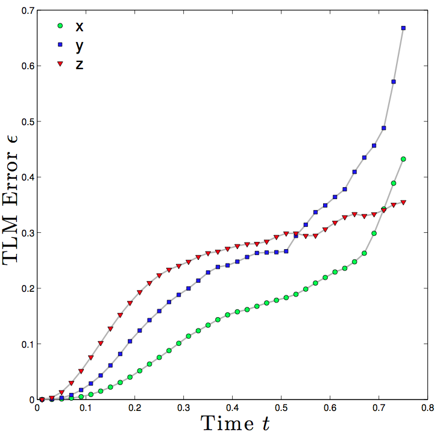EnKF
- Ensemble filters estimate the covariance using an ensemble of models
- Easy to run L63 lots, harder to use 40 CFD simulations simultaneously
- Approximate model covariance: \[ \mbP^f \approx \frac{1}{K-2} \sum _{k\neq l} \left ( \mbx_k ^f - \overline{\mbx} ^f _l \right ) \left (\mbx_k ^f - \overline{\mbx} ^f _l \right ) ^T .\]
function X_a = EnKF(X_f,y_o,H,R,delta,varargin)
% EnKF.m
%
% generalized EnKF: compute the new analysis
% "perturbed observation" method
%
% INPUTS
% X_f: the whole forecast, columns are model state
%
% OUTPUTS
% X_a: the analysis matrix, columns are model state analysis
%
% written by Andy Reagan
% 2013-10-13
% set the error the randomly perturbing the analysis IC for ensemble members
% this is the std dev of a normal error
PertError = R(1,1); % or error_max
N = length(X_f(1,:));
% let x_f now be the average
x_f = mean(X_f,2);
% for speed, could also try
X_f_diff = X_f - repmat(x_f,1,N);
% multiplicative inflation
X_f_diff = sqrt(1+delta).*X_f_diff;
p_f = 1/(N-1)*(X_f_diff*X_f_diff');
K = (p_f*H')/(R+H*p_f*H');
% now compute the analysis for each ensemble member
X_a=X_f;
for j=1:N
% perturb y_o according to R
pertY = y_o+randn(size(y_o))*PertError;
% innovation
d = pertY - H*(x_f+X_f_diff(:,j));
% here it is
X_a(:,j) = x_f+X_f_diff(:,j) + K*d;
end
Spaghetti
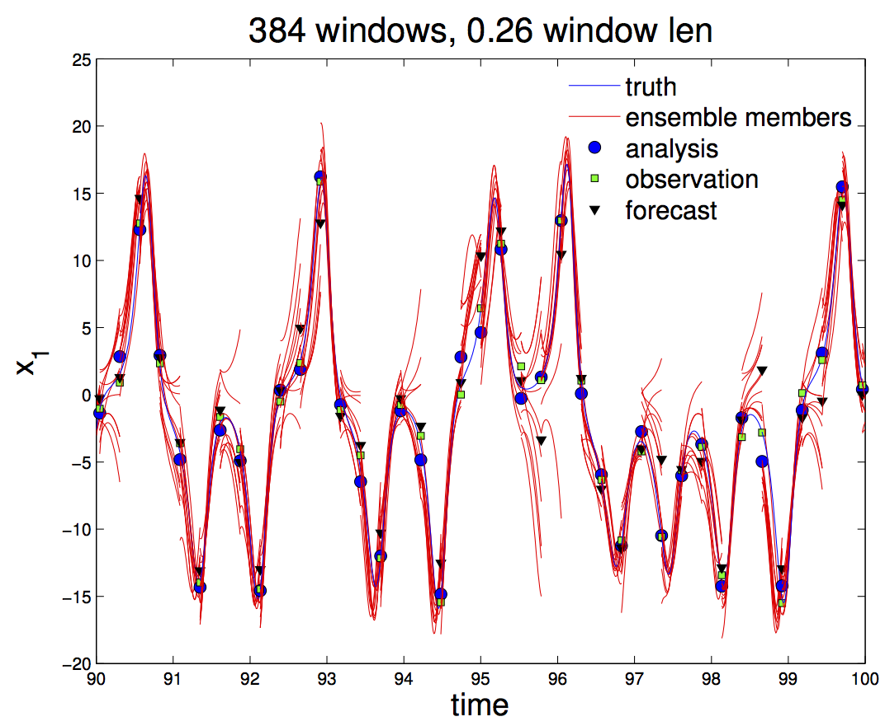ETKF
- Begin by writing: \[ \begin{equation} \mbP_a = \mbZ_a \mbZ_a^T ~~,~~~ \mbP_f = \mbZ_f \mbZ_f^T \end{equation} \]
- Since columns of \( \mbZ_f \) are ensemble differences from the mean, update the ensemble with the model \( M \): \[ \begin{equation} \mbZ_f = M \mbZ_a .\end{equation} \]
- Now: how to determine \( \mbP_a \) ( or \( \mbZ _a \))?
ETKF
- Stochastic method from (Tippet 2003): \[ \mbZ _a = ( I - \mbK \mbH) \mbZ _f + \mbK \mathbf{W}. \]
- In the SRF approach, the "Potter Method" provides a deterministic update by rewriting \[ \begin{align} \mbP_a &= \mbZ_a \mbZ_a^T = \left(\mathbf{I}-\mbP_f\mbH^T(\mbR+\mbH\mbP_f\mbH^T)^{-1}\mbH\right)\mbP_f \\ &= \mbZ_f\left(\mathbf{I}-\mbZ_f\mbH^T(\mbH\mbZ_f\mbZ_f^T\mbH^T+\mbR)^{-1}\mbH\mbZ_f\right)\mbZ_f^T\\ &= \mbZ_f\left(\mathbf{I}-\mathbf{V}\mathbf{D}^{-1}\mathbf{Z}^T\right)\mbZ_f^T. \end{align} \]
ETKF
- We have defined \(\mathbf{V}\equiv(\mbH\mbZ_f)^T\) and \(\mathbf{D}\equiv\mathbf{V}^T\mathbf{V}+\mbR\). So for the ETFK step, we use the Sherman-Morrison-Woodbury identity to show \[ \begin{equation} \mathbf{I} - \mathbf{V}\mathbf{D}^{-1}\mathbf{V}^T = (\mathbf{I}+\mathbf{Z}_f\mathbf{H}^T\mathbf{R}^{-1}\mathbf{H}\mathbf{Z}_f)^{-1}.\end{equation} \]
- The analysis update is thus \[ \begin{equation} \mbZ_a = \mbZ_f \mathbf{C}(\mathbf{\Gamma} +\mathbf{I})^{-1/2} ,\end{equation} \] where \(\mathbf{C}\mathbf{\Gamma}\mathbf{C}^T\) is the eigenvalue decomposition of \(\mbZ_f^T\mbH^T\mbR^{-1}\mbH\mbZ_f\).
ETKF
- To summarize, the steps for the ETKF are to (1) form \(\mbZ_f^T\mbH^T\mbR^{-1}\mbH\mbZ_f\), assuming \(\mathbf{R}^{-1}\) is easy, and (2) compute its eigenvalue decomposition, and apply it to \(\mbZ_f\).
function X_a = ETKF(X_f,y_o,H,R,delta,varargin)
% ETKF.m
%
% Ensemble Transform Kalman Filter: compute the new analysis
%
% INPUTS
% X_f: the whole forecast, columns are model state
%
% OUTPUTS
% X_a: the analysis matrix, columns are model state analysis
%
% written by Andy Reagan
% 2013-10-18
N = length(X_f(1,:));
%% let x_f now be the average
x_f = mean(X_f,2);
X_f_diff = X_f - repmat(x_f,1,N);
%% multiplicative inflation
X_f_diff = sqrt(1+delta).*X_f_diff;
p_f = 1/(N-1)*(X_f_diff*X_f_diff');
K = (p_f*H')/(R+H*p_f*H');
d = y_o - H*x_f;
x_a = x_f + K*d;
%% perform the transform
%% it is (from the literature)
%% absolutely necessary to perform this inversion
p_a = inv((N-1)*eye(N)+(H*X_f_diff)'/(R)*(H*X_f_diff));
T = sqrtm((N-1)*p_a);
X_a_diff = X_f_diff*T;
%% now compute the analysis for each ensemble member
X_a=repmat(x_a,1,N) + X_a_diff;
Testing and tuning the filters
Pre-compute climatological \( \mbB \) for 3D-Var
% generate_B.m
%
% make some climatological B matrices for 3dvar
%
% Andy Reagan
% 2014-10-02
clear all
close all
addpath(genpath('/Users/andyreagan/work/2013/2013-05data-assimilation/src'))
%% parameters
numRuns = 100;
modelname = 'lorenz63';
dim = 3;
%% initialize storage
for window=0.05:0.05:1
B = zeros(dim);
%% loop over number of runs (smooth out errors)
for i=1:numRuns
model = lorenz63();
model.init();
model.window = window;
initial_x = model.x;
% generate the truth timeseries
model.run()
final_x = model.x;
B = B + (final_x-initial_x)*(final_x-initial_x)';
fprintf('run %d finished\n',i);
% disp((final_x-initial_x)*(final_x-initial_x)');
end
fprintf('final B from window %f:\n',window)
B = B./numRuns;
disp(B);
Binv = inv(B);
save(sprintf('B%.2f.mat',window),'B','Binv')
end
Covariance inflation
To maintain the numerical stability of the assimilation it is necessary to use additive and/or multiplicative covariance inflation
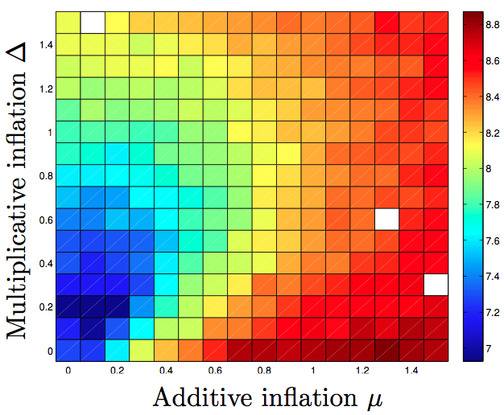Testing individually
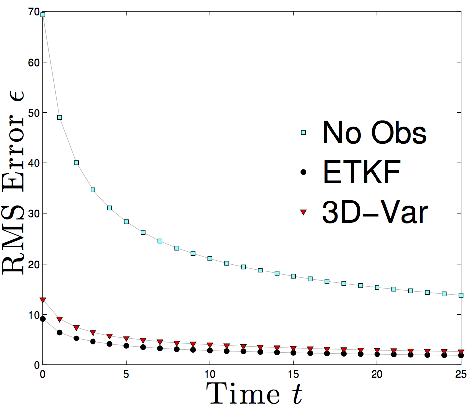Against each other and window length
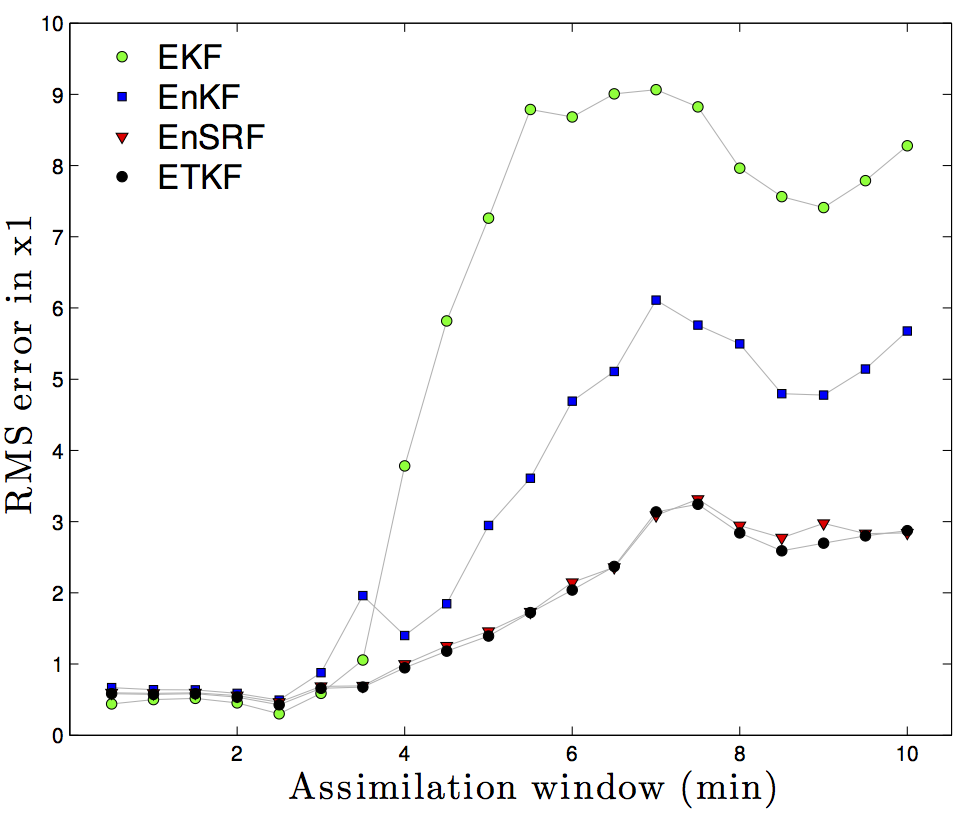Thermosyphon as model atmosphere
Modeling the thermosyphon
CFD: Navier-stokes equations
\[
\begin{align*} \frac{\partial}{\partial x_j} u_j &= 0\\
\rho \frac{\partial u_i}{\partial t} + \rho \frac{\partial}{\partial x_j} (u_j u_i) &= - \frac{\partial p}{\partial x_i} + \mu \frac{\partial^2 u_i}{\partial x_j ^2} + \rho g_i\\
\frac{\partial}{\partial t} (\rho e) + \frac{\partial}{\partial x_j} (\rho e u_j) &= -k \frac{\partial^2 T}{\partial x_k^2}\end{align*}
\]
Boussinesq Approximation
Assume density changes are linear with temperature:
\[
\rho _k = 1 - \beta ( T - T_{\text{ref}})
\]
So we neglect their effect except when multiplied by gravity
\[
\Rightarrow \rho = \rho _0
\]
Solving: OpenFOAM
OpenFOAM is an open source C++ library of CFD solvers
buoyantBoussinesqPimpleFoam
Weapon of choice
simulation parameters
- fixed boundary conditions
- 2D, laminar
- PISO solving algorithm
- semi-staggered grid
- euler time-stepping
- gauss linear/upwind/linear grad/div/laplacian linear interpolation
- DILU/PBiCG, relaxation 1
Meshing
convertToMeters 0.1; // specifications in .1 meters
vertices
(
// 16 vertices for the loop (x y z)
// top four
(0 0 34.5) //0
(1.5 0 36) //1
(0 0 37.5) //2
(-1.5 0 36) //3
...
blocks
(
// block 1, upper left
hex (6 5 4 7 2 1 0 3) (30 30 300) simpleGrading (1 1 1)
...
// define the arcs of the loop
edges
3D Mesh
(
// top circle python blockMeshDictHelper.py arc 0 0 34.5 1.5 0 36 0 0 37.5 -1.5 0 36 0 1 2 3
arc 0 1 (1.0606601717798212,0.0,34.93933982822018)
arc 1 2 (1.0606601717798212,0.0,37.06066017177982)
arc 2 3 (-1.0606601717798212,0.0,37.06066017177982)
arc 3 0 (-1.0606601717798212,0.0,34.93933982822018)
...
3D

2D
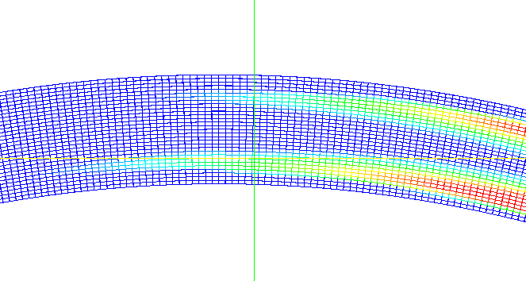Action! (2D)
VTK010-2D-fluxBC from Andy Reagan on Vimeo.
Action! (3D)
3D-Ra-2pt13-E7 from Andy Reagan on Vimeo.
Prediction
Integrating OpenFOAM and MATLAB: "FOAMLAB"
Conglomeration of bash scripts and MATLAB classes that allow MATLAB to run arbitrary OpenFOAM models on the VACC
# foamLab.sh
# INITIALIZE MODE SETTINGS
RUN=false
READ=false
INIT=false
# DEFAULT VARIABLE SETTINGS
TIME=0
while getopts ":xd:t:b:r:ie:l:w:h:g:c:q:Q:W:D:B:" opt; do
case $opt in
x) # switch for running the case
RUN=true
;;
d) # directory for either running, or reading
DIR=$OPTARG
;;
t) # starting time
TIME=$OPTARG
;;
e) # end time
ENDTIME=$OPTARG
...
Covariance localization
- full loop: \( P^f : n \times n \)
- not practical!
Covariance localization
- Square slices: \( P^f : rw \times rw \)
Covariance localization
- Radial localization: \( P^f : < 2r \times 2r \)
Real data!

Synthetic data
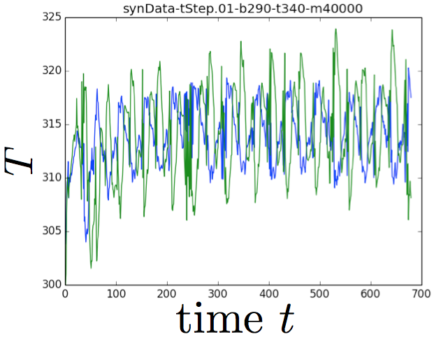Synthetic data
Results
Testing different ensemble filters:
ETKF outperforms EnKF, EnSRF
Results
Vary number of ensemble members, using 32 data points:
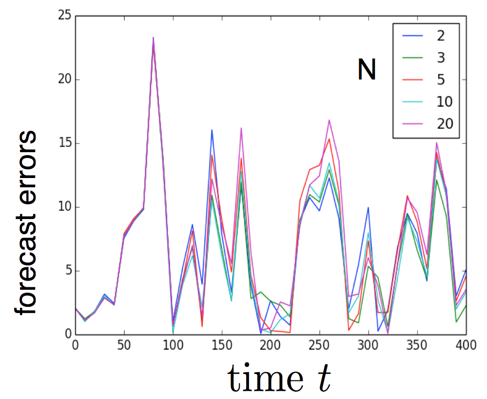Results
Use full 40K variables observation (and different numbers of ensemble members):
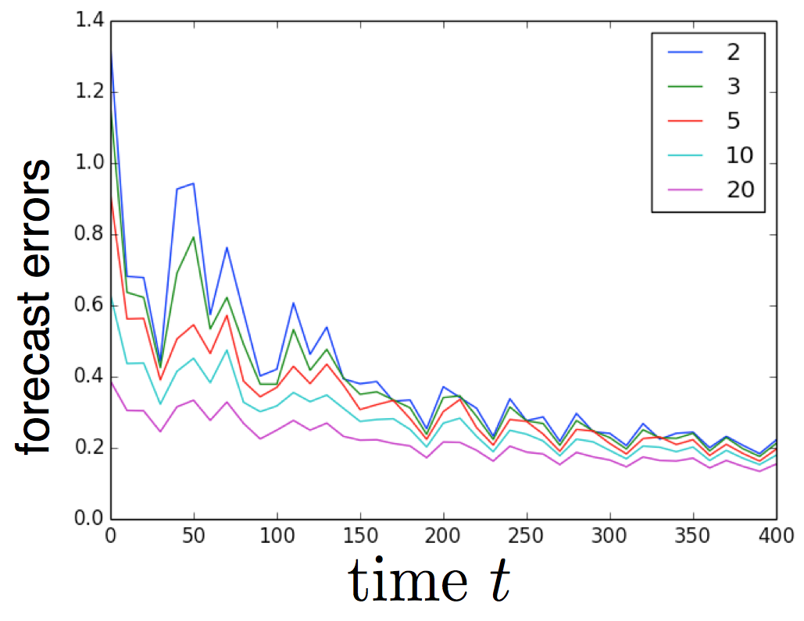Results
How many observations do we need?
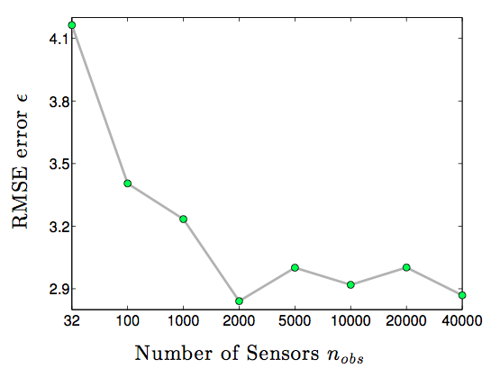Current work
- How can we do better with fewer observations?
- Fast adaptive covariance localization!